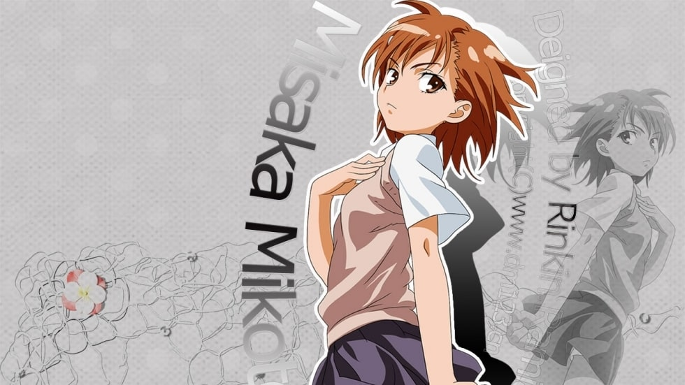

御坂美琴
个人简介
《魔法禁书目录》中的人物及《某科学的超电磁炮》的主人公。学园都市中仅有的七名超能力者中排名第三位，学园都市最强“电击使”，代号“超电磁炮”。贵族女校常盘台中学二年级学生，有“常盘台的王牌”和“最强无敌的电击公主”之称。性格好胜、正义感强，有着男孩子般的爽朗性格，但是却没有耐心，非常不坦率。
角色形象
活泼、爱唠叨的14岁少女。有着一头及肩的茶色发丝、同样是茶色的瞳孔、绝不服输的眼神、不需要化妆也很俏丽的面孔。因为外形秀丽加上成绩优秀，因此成为校内学生的偶像。紧张的时候说话会像只猫，句尾会有“~喵”的尾音。拥有高度的自尊。个性好胜且不服输，对于自己的能力抱持绝对的自信。仅仅因为“我不允许有人比我还要强”这种理由，经常向能够轻松消除其能力的上条当麻发起挑战。有着独断独行的性格，喜欢一个人独自解决问题，不愿将他人卷入其中。不属于常盘台的任何派阀，对任何人都以一视同仁的态度对待。在大家眼中是性格温柔、平易近人、没有大小姐气派的好人。在大小姐遍地的常盘台中学乃至整个学舍之园中有着极大人气，有着被学妹们所仰慕、令学姐们刮目相看的大小姐形象。
日常生活
- 喜欢清淡的食物，回避那些油腻不堪脂肪堆积的食物。
- 喜欢可爱的东西，尤其喜欢以青蛙为主题的饰品。书包上挂着绿色的“呱太”吊饰（在9月30日又增加了粉色的“跳子”吊饰）、手机也是Lovely Mitten的“呱太”型号。
- 喜欢主观式恋爱电影，对电影《铁桥是恋爱的讯号（鉄桥は恋の合図）》（导演毕佛莉·希斯路）非常着迷。喜欢玩电玩，经常去游戏场消遣，而必杀技超电磁炮的关键道具游戏币就是来自一家名为“GAU” 的游戏场。
- 学习方面优秀。由于学校有教授大学等级的课程，因而面对身为高中生的上条的功课也能轻松应对。科学侧专门知识方面丰富，拥有媲美月咏小萌老师的知识储备 。语言方面同样优秀，懂得英语、法语、俄语、意大利语等多种语言。
超能力
- “超电磁炮（Railgun）”是御坂美琴的招牌招式，利用电磁诱导原理，将游戏币以初速度3倍音速（速度1030m/s）射出。由于运用自身的电磁力修正飞行轨道和加速游戏币，所以与一般的子弹不同，美琴的超电磁炮在命中目标前是不断加速的，因此拥有极高的准确度和破坏力。连发能力为8发/min，弹着分布18.9mm。
- “雷击之枪”是美琴由刘海放出的、由十亿伏特的强大电流所形成的蓝白色光枪，能够以光速、笔直的轨迹前进。虽然超电磁炮在超过一定距离之后，会因空气摩擦而消失，但光速雷击却可以在一瞬间抵达任何遥远的角落。并且，美琴的“雷击之枪”还能够精准地从狭窄的缝隙中穿过。所以，在与御坂美琴对峙的时候，不管拉开多少直线距离都没有任何意义，重点在于进入她看不见的死角。
- “真正的落雷”是通过聚集雷云，产生云地间闪电的攻击。最大输出电压同样达到十亿伏特，也是美琴最后的绝招。
- “铁砂之剑”。美琴在格斗战中通常会使用“铁砂之剑” 。美琴透过操纵电磁力，能够将周围两百米范围内土壤中的铁砂全部收集起来，并利用磁力让铁砂随着自己的想法移动 ，形成“铁砂之剑（whip
- sword）”。“铁砂之剑”看似长剑，却能像鞭子一样自由改变形状和长度 ，能在空中延伸数十米长，产生的声响如同将蜜蜂的振翅声放大数百倍
。数量庞大的铁砂受到电磁力之类的能量操控，因而产生了振动，就像一条超高速的电动链锯
- 。高速振动的铁砂犹如电动链锯一般可以切断物体，可用于格斗战或防御。而操纵铁砂从四面八方飞起，将其化为高速振动的细长暗杀针风暴，可从三百六十度全方位朝对手袭来。
- “电磁力”。除了操纵“铁砂之剑”外，美琴还可以运用电磁力使自己吸附在钢筋混凝土或铁制的建筑上站立或是移动，甚至以更大输出的电磁力在金属环境中实现短暂的悬浮移动。第三次世界大战中在俄罗斯，更是操纵超强的电磁力以空中的飞机为中继点从三千米高空成功着陆。
- “电磁波”。拥有通过电磁波掌握空间的能力。通常状况下御坂美琴会不自主向周围放出微弱的电磁波，只要当事人有心，通过感知周围反射波的微妙变化，就可以发挥雷达的作用。只要有奇怪的动作，反射波就能察觉到，这跟死角无关。藉此，美琴能够躲避来自死角的奇袭和追踪对方的动向。
- “雷巨人”。由美琴用尘土和铁砂制造出来的巨人，能够再生、能够在一定程度内改变形状。翅膀乍看之下是用来飞行的，但其实是因为一直在收集大气中的尘埃来构成巨大身躯外皮，周围才会雾蒙蒙的，给人一种看起来像是一对不稳定翅膀的印象。身上爬了许多看起来像布料纹理的线条，感觉起来像是细细的电弧。
所获奖项
| 年份 |
奖项名 |
| 2009∣2008年 |
"这本轻小说真厉害！"大赏女性角色部门第5位 |
| 2010∣2009年 |
"这本轻小说真厉害！"大赏女性角色部门第1位 |
| 2011∣2010年 |
"这本轻小说真厉害！"大赏女性角色部门第1位 |
| 2012∣2011年 |
"这本轻小说真厉害！"大赏女性角色部门第1位 |
| 2013∣2012年 |
"这本轻小说真厉害！"大赏女性角色部门第1位 |
| 2014∣2013年 |
"这本轻小说真厉害！"大赏女性角色部门第1位 |
| 2015∣2014年 |
"这本轻小说真厉害！"大赏女性角色部门第2位 |
| 2016∣2015年 |
"这本轻小说真厉害！"大赏女性角色部门第1位 |
| 2017∣2016年 |
"这本轻小说真厉害！"大赏女性角色部门第1位 |
| 2018∣2017年 |
"这本轻小说真厉害！"大赏女性角色部门第1位 |
| 2019∣2018年 |
"这本轻小说真厉害！"大赏女性角色部门第1位 |
图片

人际关系
朋友：
被学妹兼室友的白井黑子所爱慕，经常对其过激的行为施以电击制裁。经由白井黑子，与初春饰利、佐天泪子亦成为好友，并被婚后光子和学妹湾内绢保、泡浮万彬等所仰慕。
被失忆前的上条当麻称作“放电妹（ビリビリ）”，在某项实验终止后被直呼为“御坂”；茵蒂克丝称她“短发”；在常盘台被学妹们尊称为“御坂大人”，更是被爱慕其尤为激烈的白井黑子和其克隆人御坂妹妹们称为“姐姐大人”；土御门舞夏则称呼她为“御坂御坂”。
宿敌：自从食蜂操祈以常盘台中学最大派系的女王身份君临开始，美琴与她之间就不合了 。平常光是见面就会剑拔弩张互相怒视 。经常被食蜂操祈找机会恶作剧，对美琴来说食蜂操祈是个很难缠的家伙。
情感：口中从未出现过“上条当麻”这个名字，在人前会用“那个笨蛋”来指代上条，其中理由隐含了复杂的少女情怀，不过当事人上条似乎完全没有察觉，只认为自己“好像被讨厌了”。